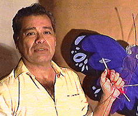

Nació en Maracay, Estado Aragua, ha viajado todo el país explorando, observando, conociendo las referencias actuales de asuntos ancestrales constitutivos de la nación venezolana y registrando los modos de producción de cada región.
Sus indagaciones documentales y presenciales le facilitan medios didácticos para transmitir en forma sistemática el conocimiento acumulado.
Organizó en 1980 el Taller La Mano, laboratorio donde se dedica a realizar con técnicas tradicionales objetos de la cultura popular con ascendencia en el gentilicio, respetando los modos manuales, las formas, las denominaciones locales, los materiales y las temporadas en que cada manifestación es propia dentro del calendario festivo de las tradiciones venezolanas..